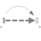

FreeMotionFree motion joint (6 degrees-of-freedom, 12 potential states) |

|
Information
This information is part of the Modelica Standard Library maintained by the Modelica Association.
Joint which does not constrain the motion between frame_a and frame_b. Such a joint is only meaningful if the relative distance and orientation between frame_a and frame_b, and their derivatives, shall be used as states.
Note, that bodies such as Parts.Body, Parts.BodyShape, have potential states describing the distance and orientation, and their derivatives, between the world frame and a body fixed frame. Therefore, if these potential state variables are suited, a FreeMotion joint is not needed.
The states of the FreeMotion object are:
- The relative position vector r_rel_a from the origin of frame_a to the origin of frame_b, resolved in frame_a and the relative velocity v_rel_a of the origin of frame_b with respect to the origin of frame_a, resolved in frame_a (= der(r_rel_a)).
- If parameter useQuaternions in the "Advanced" menu
is true (this is the default), then 4 quaternions
are states. Additionally, the coordinates of the
relative angular velocity vector are 3 potential states.
If useQuaternions in the "Advanced" menu is false, then 3 angles and the derivatives of these angles are potential states. The orientation of frame_b is computed by rotating frame_a along the axes defined in parameter vector "sequence_angleStates" (default = {1,2,3}, i.e., the Cardan angle sequence) around the angles used as states. For example, the default is to rotate the x-axis of frame_a around angles[1], the new y-axis around angles[2] and the new z-axis around angles[3], arriving at frame_b.
The quaternions have the slight disadvantage that there is a non-linear constraint equation between the 4 quaternions. Therefore, at least one non-linear equation has to be solved during simulation. A tool might, however, analytically solve this simple constraint equation. Using the 3 angles as states has the disadvantage that there is a singular configuration in which a division by zero will occur. If it is possible to determine in advance for an application class that this singular configuration is outside of the operating region, the 3 angles might be used as states by setting useQuaternions = false.
In text books about 3-dimensional mechanics often 3 angles and the angular velocity are used as states. This is not the case here, since 3 angles and their derivatives are used as states (if useQuaternions = false). The reason is that for real-time simulation the discretization formula of the integrator might be "inlined" and solved together with the model equations. By appropriate symbolic transformation the performance is drastically increased if angles and their derivatives are used as states, instead of angles and the angular velocity.
If parameter enforceStates is set to true (= the default) in the "Advanced" menu, then FreeMotion variables are forced to be used as states according to the setting of parameters "useQuaternions" and "sequence_angleStates".
In the following figure the animation of a FreeMotion joint is shown. The light blue coordinate system is frame_a and the dark blue coordinate system is frame_b of the joint. (here: r_rel_a_start = {0.5, 0, 0.5}, angles_start = {45, 45, 45}o).

Parameters (11)
| animation |
Value: true Type: Boolean Description: = true, if animation shall be enabled (show arrow from frame_a to frame_b) |
|---|---|
| angles_fixed |
Value: false Type: Boolean Description: = true, if angles_start are used as initial values, else as guess values |
| angles_start |
Value: {0, 0, 0} Type: Angle[3] (rad) Description: Initial values of angles to rotate frame_a around 'sequence_start' axes into frame_b |
| sequence_start |
Value: {1, 2, 3} Type: RotationSequence Description: Sequence of rotations to rotate frame_a into frame_b at initial time |
| w_rel_a_fixed |
Value: false Type: Boolean Description: = true, if w_rel_a_start are used as initial values, else as guess values |
| w_rel_a_start |
Value: {0, 0, 0} Type: AngularVelocity[3] (rad/s) Description: Initial values of angular velocity of frame_b with respect to frame_a, resolved in frame_a |
| z_rel_a_fixed |
Value: false Type: Boolean Description: = true, if z_rel_a_start are used as initial values, else as guess values |
| z_rel_a_start |
Value: {0, 0, 0} Type: AngularAcceleration[3] (rad/s²) Description: Initial values of angular acceleration z_rel_a = der(w_rel_a) |
| arrowDiameter |
Value: world.defaultArrowDiameter Type: Length (m) Description: Diameter of arrow from frame_a to frame_b |
| sequence_angleStates |
Value: {1, 2, 3} Type: RotationSequence Description: Sequence of rotations to rotate frame_a into frame_b around the 3 angles used as states |
| R_rel_start |
Value: Modelica.Mechanics.MultiBody.Frames.axesRotations(sequence_start, angles_start, zeros(3)) Type: Orientation Description: Orientation object from frame_a to frame_b at initial time |
Inputs (2)
| arrowColor |
Default Value: Modelica.Mechanics.MultiBody.Types.Defaults.SensorColor Type: Color Description: Color of arrow |
|---|---|
| specularCoefficient |
Default Value: world.defaultSpecularCoefficient Type: SpecularCoefficient Description: Reflection of ambient light (= 0: light is completely absorbed) |
Connectors (2)
Components (5)
| world |
Type: World |
|
|---|---|---|
| R_rel_start |
Type: Orientation Description: Orientation object from frame_a to frame_b at initial time |
|
| arrow |
Type: Arrow |
|
| R_rel |
Type: Orientation Description: Dummy or relative orientation object to rotate from frame_a to frame_b |
|
| R_rel_inv |
Type: Orientation Description: Dummy or relative orientation object to rotate from frame_b to frame_a |
Used in Examples (1)
|
Modelica.Mechanics.MultiBody.Examples.Elementary
Rigidly connected point masses in a point gravity field |